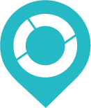

<!DOCTYPE html>
<html>
<head>
    <title>Sedi Rete Italiana Open Source</title>
    <meta charset="utf-8" />
    <meta name="author" content="Francesco Bartoli, Geobeyond - http://www.geobeyond.it" />
    <link type="text/css" rel="stylesheet" href="http://cdn.leafletjs.com/leaflet-0.4.5/leaflet.css" />
    <!--[if lte IE 8]><link rel="stylesheet" href="http://cdn.leafletjs.com/leaflet-0.4.5/leaflet.ie.css" /><![endif]-->
    <link type="text/css" rel="stylesheet" href="lib/leaflet/plugins/leaflet.markercluster/MarkerCluster.css" />
    <link type="text/css" rel="stylesheet" href="lib/leaflet/plugins/leaflet.markercluster/MarkerCluster.Default.css" />
<!-- add jquery and jqueryui from CDN hosting-->
    <link type="text/css" rel="stylesheet" href="http://ajax.googleapis.com/ajax/libs/jqueryui/1.8.17/themes/smoothness/jquery-ui.css" />
<!-- add custom style for the page itself-->
<!-- <link type="text/css" rel="stylesheet" href="lib/stylesheet/rios.css" /> -->
    <link type="text/css" rel="stylesheet" href="http://fonts.googleapis.com/css?family=Norican">
    <link type="text/css" rel="stylesheet" href="lib/bootstrap/css/bootstrap.min.css">
    <link type="text/css" rel="stylesheet" href="lib/bootstrap/css/bootstrap-responsive.min.css">
    <script src="http://ajax.googleapis.com/ajax/libs/jquery/1.7.2/jquery.min.js"></script>
    <script src="http://ajax.googleapis.com/ajax/libs/jqueryui/1.8.17/jquery-ui.min.js"></script>
    <script type="text/javascript" src="lib/bootstrap/js/bootstrap.min.js"></script>
    <script type="text/javascript" src="http://cdn.leafletjs.com/leaflet-0.4.5/leaflet.js"></script>
    <script type="text/javascript" src="lib/leaflet/plugins/leaflet.markercluster/leaflet.markercluster.js"></script>
    <style type="text/css">
      html, body {
        margin: 0;
        padding: 0;
        height: 100%;
        width: 100%;
        position: absolute;
        overflow:hidden;
      }

      .leaflet-control-geoloc {
        background-image: url(data/img/location.png);
        -webkit-border-radius: 5px 5px 5px 5px;
        border-radius: 5px 5px 5px 5px;
      }
    </style>
    <!-- External GeoJSON file geocoded from CSV with QGIS -->
    <script src="data/sedi_RIOS_geocoded.js"></script>
</head>
<body>
    <script>
        var cloudmade, mapquestOSM, mapquestOAM, clusterMarkers, markers;
        $.ajaxSetup({ cache: false });

        var isMobile = {
            Android: function() {
                return navigator.userAgent.match(/Android/i);
            },
            BlackBerry: function() {
                return navigator.userAgent.match(/BlackBerry/i);
            },
            iOS: function() {
                return navigator.userAgent.match(/iPhone|iPad|iPod/i);
            },
            Opera: function() {
                return navigator.userAgent.match(/Opera Mini/i);
            },
            Windows: function() {
                return navigator.userAgent.match(/IEMobile/i);
            },
            any: function() {
                return (isMobile.Android() || isMobile.BlackBerry() || isMobile.iOS() || isMobile.Opera() || isMobile.Windows());
            }
        };

        function markLocation() {
            $('#newmarkerModal').modal('show');
            $('#lat').val(map.getCenter().lat);
            $('#lng').val(map.getCenter().lng);
        }


        cloudmade = new L.TileLayer("http://{s}.tile.cloudmade.com/2c9aaf990ed9461691b72500453a9c4b/997/256/{z}/{x}/{y}.png", {
            maxZoom: 18,
            subdomains: ["a", "b", "c"],
            attribution: 'Map data (c) <a href="http://www.openstreetmap.org/" target="_blank">OpenStreetMap</a> contributors, CC-BY-SA.'
        });
        mapquestOSM = new L.TileLayer("http://{s}.mqcdn.com/tiles/1.0.0/osm/{z}/{x}/{y}.png", {
            maxZoom: 18,
            subdomains: ["otile1", "otile2", "otile3", "otile4"],
            attribution: 'Basemap tiles courtesy of <a href="http://www.mapquest.com/" target="_blank">MapQuest</a> . Map data (c) <a href="http://www.openstreetmap.org/" target="_blank">OpenStreetMap</a> contributors, CC-BY-SA.'
        });
        mapquestOAM = new L.TileLayer("http://{s}.mqcdn.com/tiles/1.0.0/sat/{z}/{x}/{y}.jpg", {
            maxZoom: 18,
            subdomains: ["oatile1", "oatile2", "oatile3", "oatile4"],
            attribution: 'Tiles courtesy of <a href="http://www.mapquest.com/" target="_blank">MapQuest</a>. Map data (c) <a href="http://www.openstreetmap.org/" target="_blank">OpenStreetMap</a> contributors, CC-BY-SA.'
        });

        markers = new L.FeatureGroup();
        clusterMarkers = new L.MarkerClusterGroup({spiderfyOnMaxZoom: true, showCoverageOnHover: false, zoomToBoundsOnClick: true});

        function getData() {
            markers.clearLayers();
            L.getJSON(riosFeature, function (data) {
                for (var i = 0; i < data.length; i++) {
                    var location = new L.LatLng(data[i].Latitudine, data[i].Longitudine);
                    var azienda = data[i].Azienda;
                    var ind_sede = data[i].Indirizzo_Sede;
                    var website = data[i].Sito_Web;
                    var marker = new L.Marker(location, {
                        title: azienda
                    });
                    var contenuto =   '<table class="table table-striped table-bordered table-condensed table-hover">'+
                                        '<tr>'+
                                            '<th>Azienda: </th>'+
                                            '<td>' + azienda + '</td>'+
                                        '</tr>'+
                                            '<th>Indirizzo: </th>'+
                                            '<td>' + ind_sede + '</td>'+
                                        '</tr>'+
                                        '</tr>'+
                                            '<th>Web: </th>'+
                                            '<td><a href="' + website + '" target="_blank">link</a></td>'+
                                        '</tr>'+
                                    '</table>';
                    marker.bindPopup(contenuto, {
                        maxWidth: '200',
                        maxHeight: '200'
                    });
                    //markers.addLayer(marker);
                    clusterMarkers.addLayer(marker);
                    $('#markerTable').append($('<tr><td><a class="btn btn-small btn-inverse" href="#" onclick="map.setView(['+data[i].Latitudine+', '+data[i].Longitudine+'], 17); $(\'#markersModal\').modal(\'hide\'); return false;"><i class="icon-map-marker icon-white"></i></a></td><td>'+azienda+'</td><td>'+ind_sede+'</td></tr>'));
                }
            }).complete(function () {
                //map.fitBounds(markers.getBounds());
                map.fitBounds(clusterMarkers.getBounds());
            });
        }

        map = new L.Map("map",{
            //zoom: 15,
            //center: new L.LatLng(41.06911170443168, -89.28026676177979),
            layers: [mapquestOSM, /*markers*/ clusterMarkers]
        });
        getData();
        map.attributionControl.setPrefix('');
        map.fitBounds([[49.384358, -66.949895], [24.544701, -124.733174]]);

        function onLocationFound(e) {
            /*var radius = e.accuracy / 2;
            L.marker(e.latlng).addTo(map)
                .bindPopup("You are within " + radius + " meters from this point").openPopup();
            L.circle(e.latlng, radius).addTo(map);*/
            //console.log(e.accuracy);
            if (e.accuracy <= 20) {
                map.stopLocate();
            };
            var killGPS = setInterval(function () {
                map.stopLocate();
                clearInterval(killGPS);
            }, 10000);

        }

        function onLocationError(e) {
            alert(e.message);
        }

        map.on('locationfound', onLocationFound);
        //map.on('locationerror', onLocationError);


        //map.locate({setView: true, maxZoom: 16});

        // GeoLocation Control
        function geoLocate() {
            map.stopLocate();
            map.locate({setView: true, maxZoom: 17, maximumAge: 3000, enableHighAccuracy: true, watch: true});
        }
        var geolocControl = new L.control({
            position: 'topleft'
        });
        geolocControl.onAdd = function (map) {
            var div = L.DomUtil.create('div', 'leaflet-control-zoom leaflet-control');
            div.innerHTML = '<a class="leaflet-control-geoloc" href="#" onclick="geoLocate(); return false;" title="My location"></a>';
            return div;
        };
        map.addControl(geolocControl);

        // Layer control
        var baseLayers = {
            "Streets": mapquestOSM,
            "Imagery": mapquestOAM
        };
        var overlays = {
            "&nbsp;Markers": /*markers*/clusterMarkers
        };
        if (isMobile.any() || document.body.clientWidth <= 767) {
            var isCollapsed = true;
        } else{
            var isCollapsed = false;
        };
        var layersControl = new L.Control.Layers(baseLayers, overlays, {
            collapsed: isCollapsed,
            autoZIndex: true
        });
        map.addControl(layersControl);

        map.on('movestart', function() {
            $('#crosshair').css('opacity', '1');
        });
        map.on('moveend', function() {
            $('#crosshair').css('opacity', '0.5');
        });
        map.on('popupopen', function() {
            $('#crosshair').css('display', 'none');
        });
        map.on('popupclose', function() {
            $('#crosshair').css('display', 'block');
        });
    </script>
    <div id="map" style="height:600px"></div>
    <div class="geolocation">
        <a href="#" onclick="geoLocate(); return false;" title="Try Location"></a>
    </div>
    <form class='location'>
        <input type='text' class='search' placeholder='Search Location'>
    </form>
    <div id="legend"></div
</body>